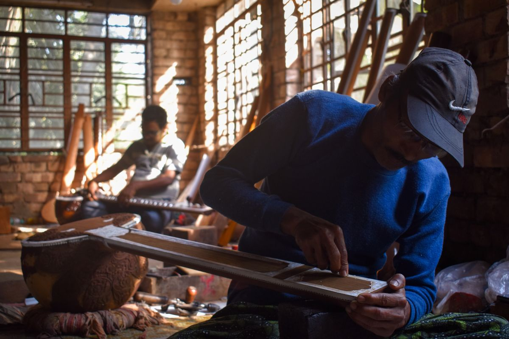
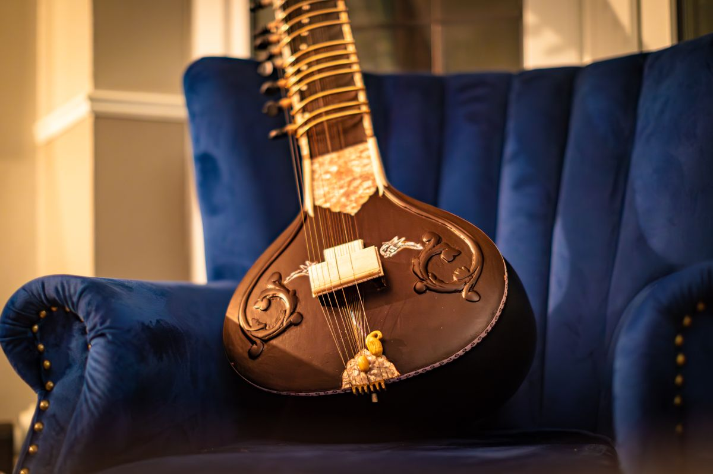

About
Nineteen years with one teacher
I came to the sitar late and sideways: a borrowed instrument, a neighbour's wedding, and a sound I could not leave alone. I was sixteen. The borrowed sitar went back after a month, and it took a year of paper-round money and my mother's quiet diplomacy before there was one of my own — a student instrument from a Kolkata workshop, heavy, honest, and impossible to keep in tune through a monsoon.
At nineteen I began taleem with Pandit Debabrata Sen, and stayed for nineteen years, until his death. His method was unfashionable and total: one raga at a time, for months; no new gat until the alap could hold a room; and a rule I still keep — nothing is performed in public until it has been played in private for a hundred evenings. He also made me learn the instrument itself: frets, jawari, string gauges, the geometry of why a note blooms or dies. “The sitar is not furniture you make sounds on,” he said. “It is the other musician.”
These days the year has a shape. January is Dover Lane, the conference I first heard as a student standing at the back. The winter is baithaks in Kolkata homes; the summer holds the June retreat — two closed weeks of riyaz, no concerts, no exceptions — and the monsoon months are for teaching and for the workshop bench. I play perhaps forty evenings a year. It is enough. An evening raga played properly takes more out of a day than the day has.
On amplification, since organisers ask: two microphones, kept low, and in a small room none at all. The moment a hall engineer reaches for the reverb, the meend drowns — the long slide between notes is the sitar's whole argument, and it does not survive being sweetened.

The training, in brief
Taleem timeline
- 1998
First instrument. A student sitar bought second-hand in Kolkata; a year of self-teaching and neighbourhood weddings before any formal lesson.
- 2001
Taleem begins with Pandit Debabrata Sen. First raga: Yaman, studied for eight months before a second was allowed.
- 2006
First public baithak — Bhimpalasi in a Lake Town home, after the hundred-evenings rule had been served on it twice over.
- 2011
First Dover Lane appearance, in an afternoon slot, as his teacher's accompanist on tanpura — the education of sitting behind a master in public.
- 2016
Solo Dover Lane debut, late slot, Puriya. The slot he has held, in one form or another, most years since.
- 2020
Pandit Debabrata Sen dies. The June retreat begins the following year — two closed weeks of riyaz in his memory, kept every year since.
- Now
About forty evenings a year, six students, one instrument, and the same rule: nothing public before its hundred private evenings.
The instrument
One sitar, known by hand
The concert sitar was made in Kolkata in 2009, a teak instrument with a single gourd, built over one winter by a maker who asked, before he would start, which ragas it was for. It has been re-fretted twice and re-voiced once — the jawari, the curved bridge whose exact filing decides whether a note blooms or buzzes, is redone by hand before every winter season and never delegated.
Stringing is a discipline, not a chore. The main playing strings are changed before every concert — a string that has done one full evening has done its work. The full set, sympathetic strings included, is renewed every season, and the sympathetic strings are tuned to the raga of the evening, never left at a generic setting. A spare, fully strung second instrument travels to every concert outside the house; Santiniketan is why.
Care, plainly: the instrument lives at room humidity, never in a car, never by a window; it is wiped down after every playing, the frets polished monthly, and it goes back to its maker's workshop once a year whether it seems to need it or not. Instruments do not announce their problems. They accumulate them, quietly, in the wood.

Teaching
Six students, no more
Arjun teaches six students at a time in Kolkata, taken on by audition — which is really a conversation about patience. One raga at a time; the hundred-evenings rule applies to students too, kindly. When a place opens it is announced here first; write via the contact page if you would like to be considered when one does.